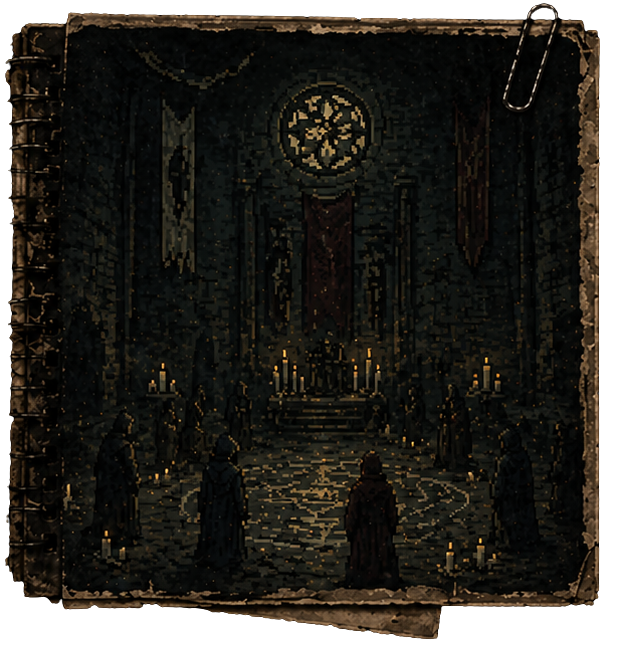

Algo antiguo duerme bajo tierra y sangre . . .
San Sebastián, 1950
El juego toma lugar en el año 2005, 20 años después de la
gran tragedia que acabó con un pueblo.
Tomarás el papel de un detective, el cual deberá investigar
el origen de la catástrofe.
Estos son los eventos que llevaron al ritual:
✧ 1950 - Se funda el hospital
✧ 1972 - Comienzan los rituales
✧ 1985 - El incidente
✧ HOY - Todo ha sido olvidado
